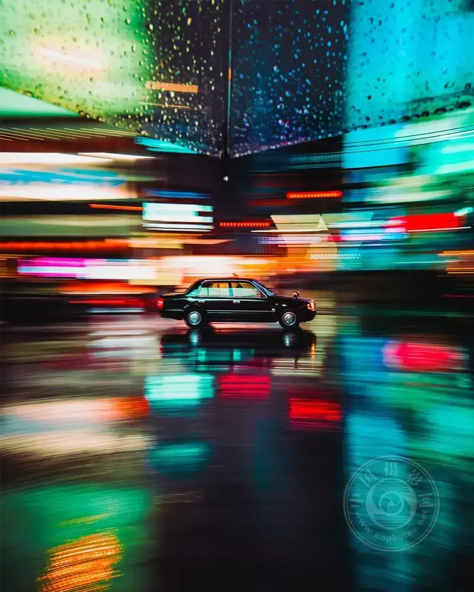
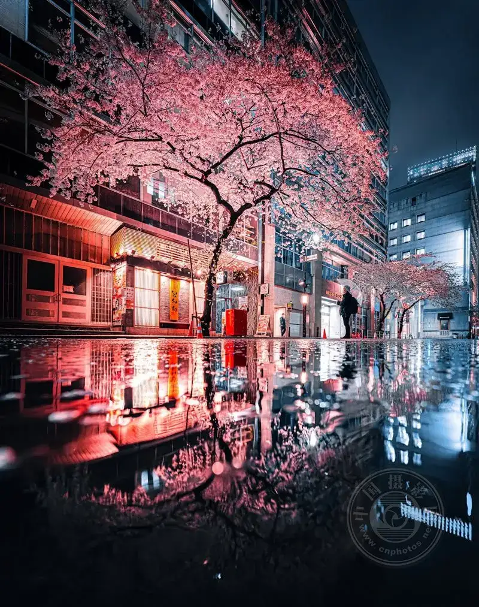
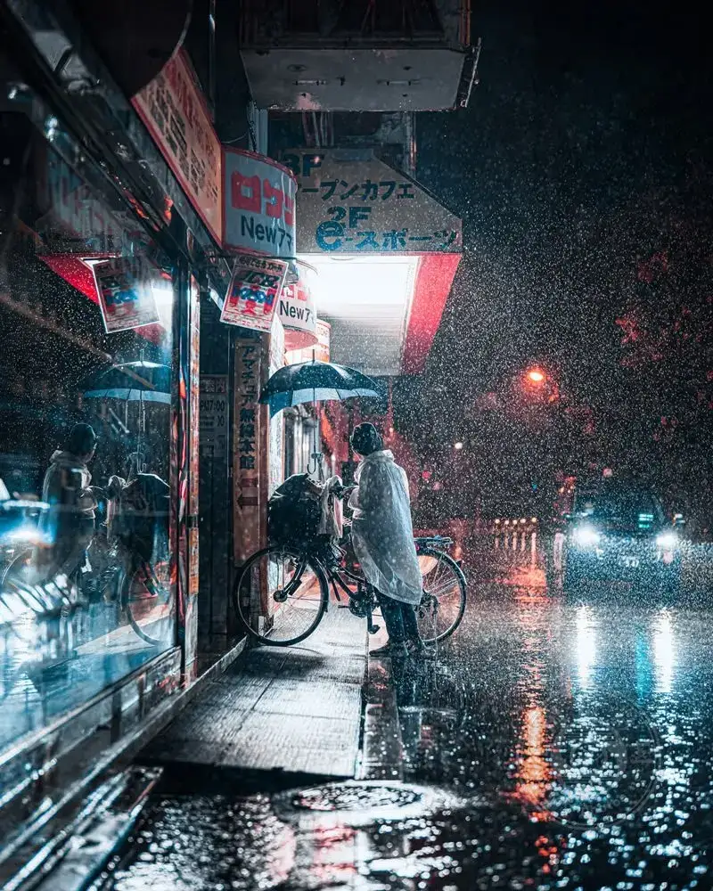
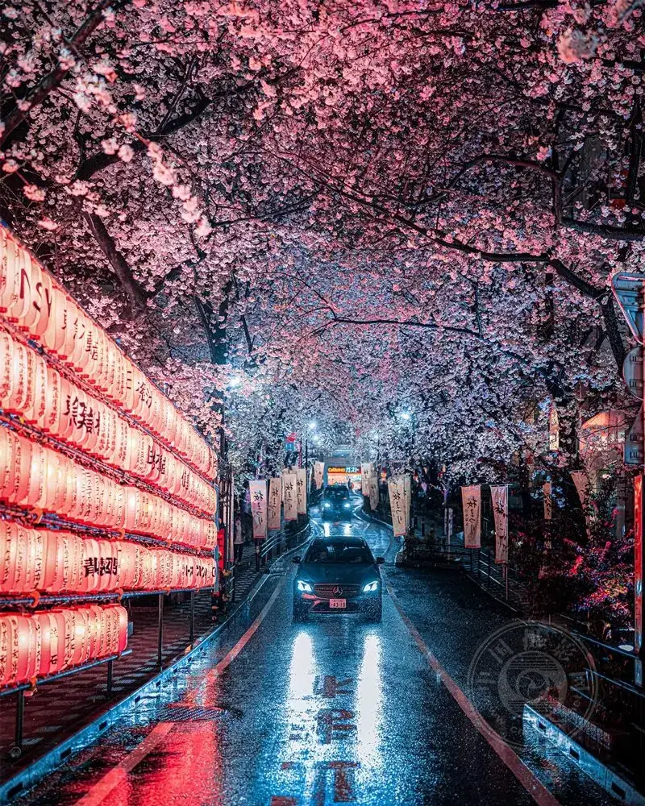
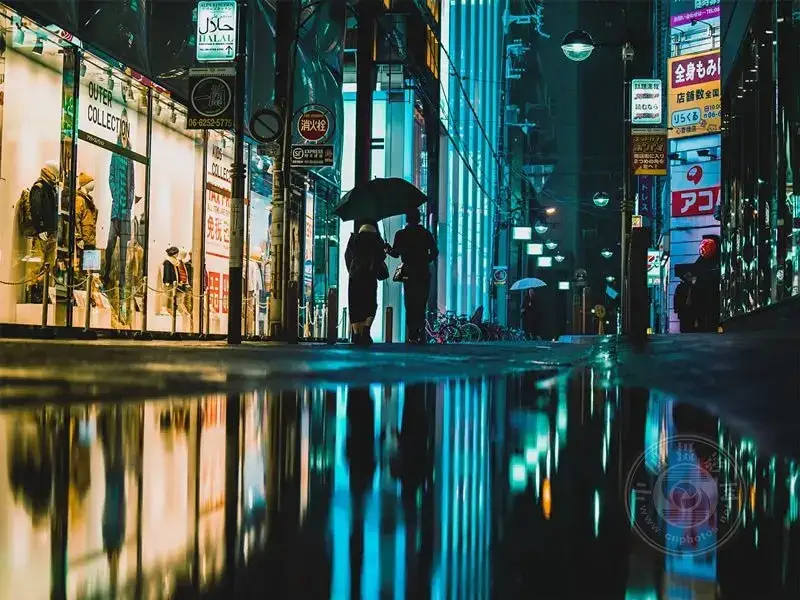
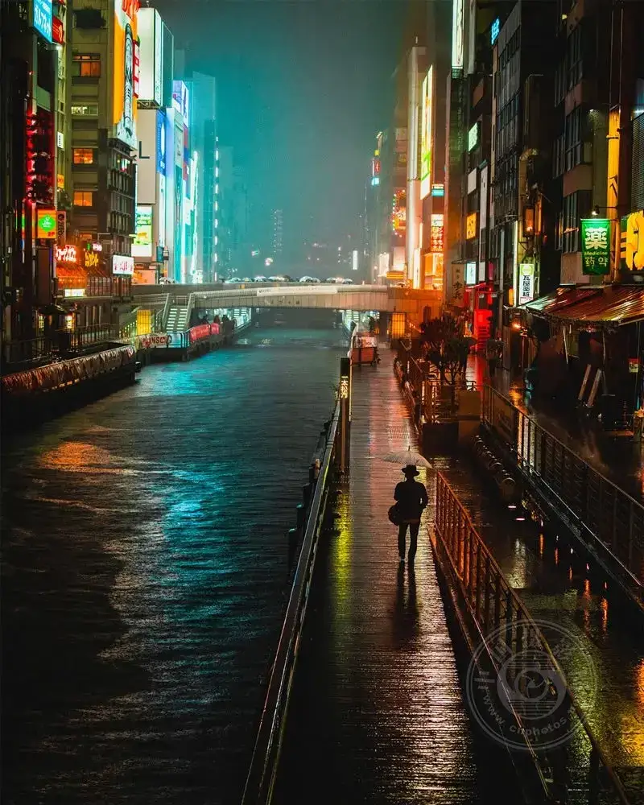
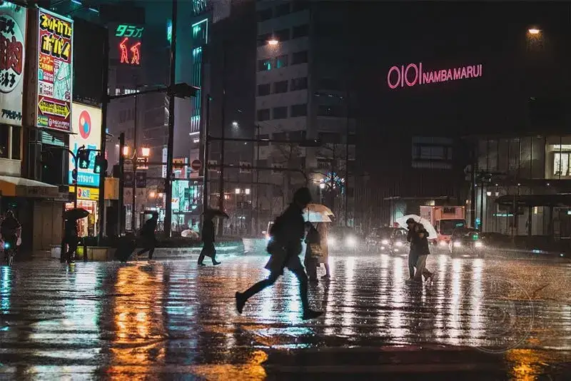
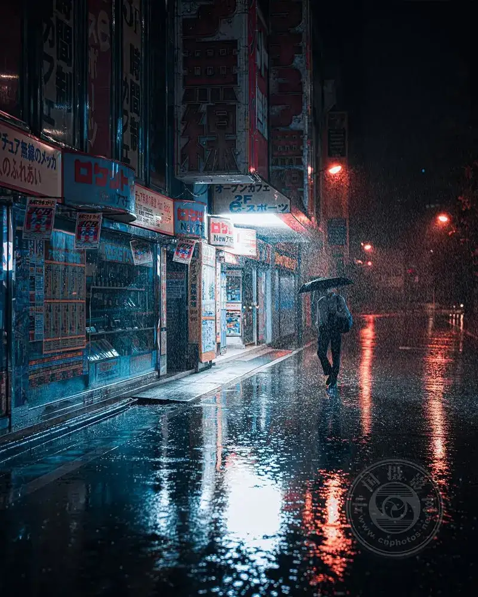

The street after rain has a magic that changes the mood of a city in an instant. The familiar road becomes as attractive as a movie frame. Streetlights pull long trails of light, and reflections double the world around.
For a photographer, these moments are not only beautiful. They are full of the power to tell a story.
Let us explore why the city on a rainy night keeps inspiring the most striking urban photography.

▲ ©Osaka Omi Kim
When the city starts to glow
Rain turns the ordinary street into a canvas of reflection. The wet ground mirrors everything: neon signs, passing cars, and streetlights. This creates layered framing that does not exist when the road is dry.
Suddenly you no longer have only one subject. You have:
■ the real scene
■ the reflected scene
■ and the space between them
This added depth makes even a simple shot feel rich and immersive.
| Pro tip: look down as often as you look ahead. The strongest photos are often hidden in the puddles.

▲ ©Junya Watanabe
Reflections tell a double story
Reflections on the rainy-night street do more than add beauty. They create a story.
A person walking past with an umbrella becomes two figures:
■ one real
■ one abstract
This double nature adds emotion and mystery. You can use a reflection to frame, to stress loneliness, to make symmetry, or to bring in a surreal, dreamlike mood.
Many photographers use reflections to say more without adding extra elements. You can see the beauty of this in award-winning minimal street work. Simplicity and reflection join to make a strong visual story.
| Try flipping the frame in post-processing. Sometimes the reflection tells a stronger story than reality itself.

▲ ©Junya Watanabe
Neon and the drama of color
Rain amplifies color. Neon light reflects off the wet road and forms bright bands of pink, blue, and yellow.
This is why cities known for neon, such as Tokyo in Japan or Hong Kong in China, often appear in rainy-night photos.
But you do not need to go there. Even a traffic light on a small street, a shop sign, or a passing car can create a dramatic color contrast, as long as the ground is wet.
| Expert tip: underexpose slightly to make the color richer, and to keep the highlights from blowing out.

▲ ©Junya Watanabe
Mood, emotion, and atmosphere
Rain naturally adds emotion to a scene. It softens the light, cuts visual clutter, and builds a quiet, reflective mood.
This is why rainy-night street photography often feels:
■ cinematic
■ nostalgic
■ a little melancholic
It is not only about looks. It is about feeling.
Even a loud city looks calm and close when seen through a veil of rain.
This emotional depth is why rainy-night street photography is so compelling. As you see in Eduardo Ortiz's street work, ordinary everyday moments turn into cinematic images.
| Add a human element, such as a silhouette, an umbrella, or a shadow, to give the frame a sense of scale and emotional depth.

▲ ©Osaka Omi Kim
Motion becomes visible
A rainy night makes motion easier to catch and more striking to see.
Car lights pull long trails. Pedestrians drift softly across the frame in blur. Raindrops catch the light in subtle ways.
With a slower shutter speed, you can:
■ turn traffic into flowing lines
■ catch ghostly motion
■ add energy without clutter
| Suggestion: start with a shutter speed around 1/10 of a second to 1 second, then adjust for the motion.

▲ ©Osaka Omi Kim
Why photographers return to the rain again and again
Rain does not only change the look of the street. It changes the way we see it.
It simplifies the scene, strengthens the light, and adds layers you cannot see at other times. For a photographer, it offers a mix of control and the unexpected.
Each frame is a little different:
■ new reflections
■ new subjects
■ new stories
And that is why it stays exciting.
Today smartphones dominate photography. More than 90% of images are shot on phones, and traditional cameras account for less than 8%. This shift is driven mostly by social media. It makes photography more casual and more focused on daily life, and it turns ordinary moments like the rainy-night street into strong visual stories.

▲ ©Osaka Omi Kim
The rainy street reminds us that you do not need to go somewhere far away to make a strong image. Sometimes all you need is a familiar place, a little rain, and a different point of view.
Next time it rains, take your camera and go out.
You may find a poem in the reflection at your feet.

▲ ©Junya Watanabe
Frequently Asked Questions
1. What are the best camera settings for rainy-night street photography?
For a rainy night, use a wide aperture (f/1.8 to f/2.8) to let in more light, and raise the ISO (between 800 and 3200, depending on your camera). Keep the shutter speed balanced. A faster shutter (1/125 s) freezes motion, while a slower shutter (1/10 s to 1 s) suits light trails and reflections. Adjust to the scene and the motion.
2. How do I protect my camera when I shoot in the rain?
Use a rain cover. If you do not have professional gear, a simple plastic bag works. Carry a microfiber cloth and wipe the lens often. Also, do not change lenses in the rain, so moisture does not get into the camera body.
3. Why do reflections look better on a night after rain?
At night, artificial light such as streetlights, car lights, and neon reflects off wet surfaces and creates contrast and color depth. In daylight, natural light is more diffuse and less directional, so the reflections look flatter.
4. Do I need a tripod for rainy-night street photography?
Not always. If you shoot handheld, the image stabilization in modern cameras handles low light well. Still, a tripod helps when you use slower shutter speeds for light trails and clearer reflections, and it is very useful for long exposures.
5. What subjects work best on a rainy-night street?
Focus on subjects that strengthen the light and mood, such as pedestrians with umbrellas, neon signs, puddles, passing cars, and silhouettes. These elements bring reflections, motion, and layers, and they make the photo more compelling and cinematic.